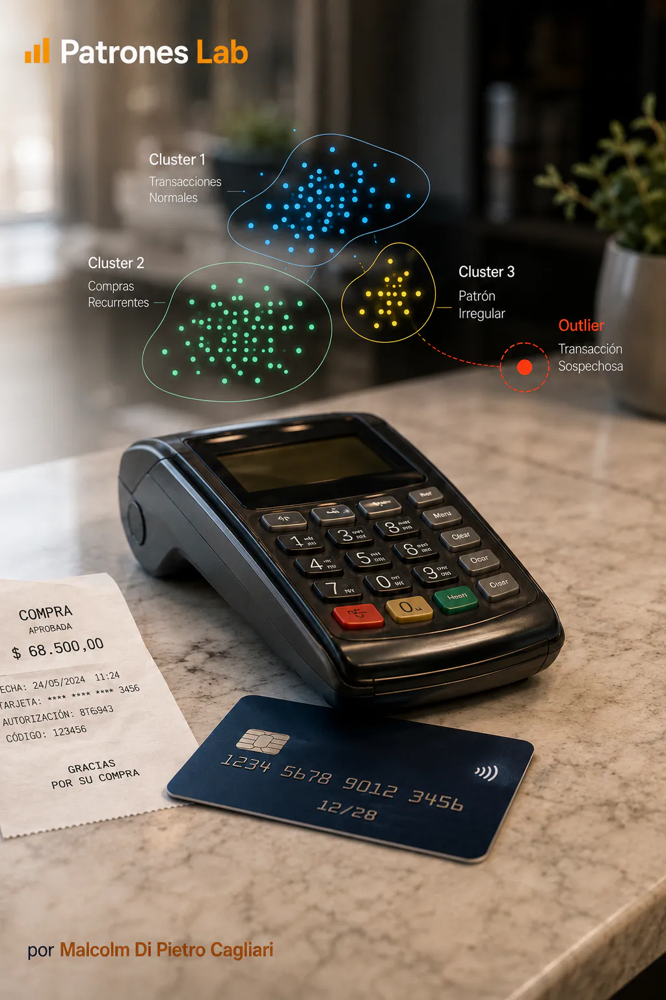

机器学习 · 项目 08

项目 10 · 机器学习
机器学习模型 · 用 DBSCAN 检测欺诈
分析信用卡交易行为，发现典型模式及异常交易。项目使用无监督算法 DBSCAN，依据数据密度形成簇并识别孤立交易。
背景与目标
项目分析信用卡记录中每笔交易的特征，识别常见行为、相似交易的聚集方式，以及明显不同于其他记录的情况。
为研究这些差异，采用DBSCAN，按特征相似程度对交易分组。这种机器学习方法识别相似交易的密集区，并标出孤立记录。
理解这些行为并识别值得细查的异常交易。随后结合各笔交易的背景信息，判断是否需要专项调查。
模型与分析
交易数据准备
分析使用交易金额及记录中的其他特征。检查数据质量并整理变量，使各记录可按一致标准比较。
比较依据是交易相似度。为考虑数值范围不同的变量，先调整其尺度，再识别群组。
使用 DBSCAN 识别群组
DBSCAN 找到特征相近的交易密集区，并以这些区域形成簇。它检查哪些记录彼此足够接近、每条记录周围有多少相似交易，因此分组取决于数据的实际分布。
结果可分为三种情况：
- 核心交易：周围有多笔相似记录，构成群组的核心。
- 边界交易：位于一组相似交易附近。
- 孤立交易：不属于已识别的簇，标签为 -1。
异常交易分析
图表展示交易分布及各群组的共同特征，也可将群组与孤立记录比较，找出值得进一步核查的行为。
标签 -1 表示按当前标准识别出的异常交易。可将其金额及其他特征与补充信息结合，判断这是偶发购买还是需进一步调查的情况。
交付与收获
项目提供 Python 笔记本，包含数据准备、DBSCAN 聚类和结果探索图表。可借此分析交易群组，选择异常交易供进一步核查。
加入新交易后可重复流程，观察分组变化及最新数据中的异常记录。采用相同的数据准备标准便于比较两次分析。
图库